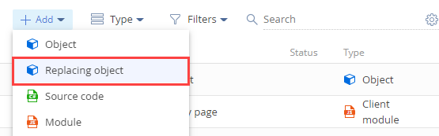
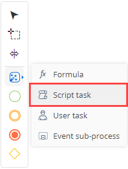

1. Создать системные настройки
-
Создайте системную настройку с маской кода продукта.
- Перейдите в дизайнер системы по кнопке
 .
. - В блоке Настройка системы (System setup) перейдите по ссылке Системные настройки (System settings).
- На панели инструментов раздела нажмите на кнопку Добавить настройку (Add setting).
-
Заполните свойства системной настройки.
- Название (Name) — "Маска кода продукта" ("Product code mask").
- Код (Code) — "ProductCodeMask".
- Тип (Type) — выберите "Строка неограниченной длины" ("Unlimited length text").
- Значение по умолчанию (Default value) — "ART_{0:00000}".
- Перейдите в дизайнер системы по кнопке
-
Создайте системную настройку с текущим кодом продукта.
- Перейдите в дизайнер системы по кнопке .
- В блоке Настройка системы (System setup) перейдите по ссылке Системные настройки (System settings).
- На панели инструментов раздела нажмите на кнопку Добавить настройку (Add setting).
-
Заполните свойства системной настройки.
- Название (Name) — "Текущий код продукта" ("Product last number").
- Код (Code) — "ProductLastNumber".
- Тип (Type) — выберите "Целое число" ("Integer").
- Перейдите в дизайнер системы по кнопке
2. Создать схему замещающего объекта
- Перейдите в раздел Конфигурация (Configuration) и выберите пользовательский пакет, в который будет добавлена схема.
-
На панели инструментов реестра раздела нажмите Добавить —> Замещающий объект (Add —> Replacing object).
 -
Заполните свойства схемы.
- Код (Code) — "Product".
- Заголовок (Title) — "Продукт" ("Product").
- Родительский объект (Parent object) — выберите "Product".
-
В схему добавьте событие.
- Перейдите в узел События (Events) структуры объекта.
-
В блоке Добавление (Adding) установите признак Перед добавлением записи (Before record added). Событию присвоено имя ProductInserting.
- На панели инструментов дизайнера объектов нажмите Сохранить (Save).
-
Реализуйте событийный подпроцесс.
- На панели инструментов дизайнера объектов нажмите Открыть процесс (Open process).
-
В области элементов дизайнера нажмите Действия системы (System actions) и разместите элемент Событийный подпроцесс (Event sub-process) в рабочей области дизайнера процессов.
- На панели настройки элементов заполните свойство Заголовок (Title) — "Product Inserting Sub-process".
-
Настройте элементы событийного подпроцесса.
-
Настройте начальное событие Сообщение (Message).
- Заголовок (Title) — "Before product adding".
- При получении какого сообщения запускать процесс? (Which message event should start the process?) — "ProductInserting".
-
Добавьте логический оператор Исключающее "ИЛИ" (Exclusive gateway (OR)).
Для этого в меню начального события Сообщение (Message) выберите Исключающее "ИЛИ" (Exclusive gateway (OR)).
-
Добавьте действие системы Задание-сценарий (Script task).
-
В области элементов дизайнера нажмите Действия системы (System actions) и разместите действие системы Задание-сценарий (Script task) в рабочей области подпроцесса.
 - Действию системы Задание-сценарий (Script task) добавьте имя "Определить схему объекта для генерации номера" ("Get entity schema to generate number").
-
Добавьте код действия системы Задание-сценарий (Script task).
UserTask1 — код действия системы Выполнить действие процесса (User task) Выполнить генерацию номера (Generate number), настройка которого описана на следующем шаге. Изменить код можно в расширенном режиме настройки действия системы Выполнить действие процесса (User task).
- На панели инструментов дизайнера процессов нажмите Сохранить (Save).
-
-
Добавьте действие системы Выполнить действие процесса (User task).
-
В области элементов дизайнера нажмите Действия системы (System actions) и разместите действие системы Выполнить действие процесса (User task) в рабочей области подпроцесса.
-
Заполните свойства действия системы.
- Заголовок (Title) — "Выполнить генерацию номера" ("Generate number").
- Какое пользовательское действие выполнить? (Which user task to perform?) — выберите "Generate ordinal number". Системное действие генерирует текущий порядковый номер в соответствии с маской, которая установлена в системной настройке ProductCodeMask.
-
-
Добавьте действие системы Задание-сценарий (Script task).
-
В области элементов дизайнера нажмите Действия системы (System actions) и разместите действие системы Задание-сценарий (Script task) в рабочей области подпроцесса.
- Действию системы Задание-сценарий (Script task) добавьте имя "Записать полученный номер в колонку объекта" ("Save number to entity column").
-
Добавьте код действия системы Задание-сценарий (Script task).
- На панели инструментов дизайнера процессов нажмите Сохранить (Save).
-
-
Добавьте событие Останов (Terminate).
Для этого в области элементов дизайнера нажмите Останов (Terminate) и разместите событие в рабочей области подпроцесса.
-
-
Настройте потоки.
-
Настройте условный поток между логическим оператором Исключающее "ИЛИ" (Exclusive gateway (OR)) и действием системы Определить схему объекта для генерации номера (Get entity schema to generate number).
- В меню логического оператора Исключающее "ИЛИ" (Exclusive gateway (OR)) нажмите на кнопку
 и соедините логический оператор Исключающее "ИЛИ" (Exclusive gateway (OR)) с действием системы Определить схему объекта для генерации номера (Get entity schema to generate number).
и соедините логический оператор Исключающее "ИЛИ" (Exclusive gateway (OR)) с действием системы Определить схему объекта для генерации номера (Get entity schema to generate number). -
Заполните свойства условного потока.
- Заголовок (Title) — "Код не заполнен" ("Code is empty").
-
Условие перехода (Condition to move down the flow).
- На панели настройки элементов в свойстве Условие перехода (Condition to move down the flow) нажмите кнопку .
-
Задайте формулу.
- Сохраните изменения.
- В меню логического оператора Исключающее "ИЛИ" (Exclusive gateway (OR)) нажмите на кнопку
-
Настройте поток по умолчанию между логическим оператором Исключающее "ИЛИ" (Exclusive gateway (OR)) и событием Останов (Terminate).
- В меню логического оператора Исключающее "ИЛИ" (Exclusive gateway (OR)) нажмите на кнопку и соедините логический оператор Исключающее "ИЛИ" (Exclusive gateway (OR)) с событием Останов (Terminate).
-
Трансформируйте поток управления в поток по умолчанию. Для этого в меню потока нажмите —> Поток по умолчанию (Default flow).
- В меню логического оператора Исключающее "ИЛИ" (Exclusive gateway (OR)) нажмите на кнопку
-
Настройте потоки управления.
- В меню действия системы Определить схему объекта для генерации номера (Get entity schema to generate number) нажмите на кнопку и соедините действие системы Определить схему объекта для генерации номера (Get entity schema to generate number) с действием системы Выполнить генерацию номера (Generate number).
- В меню действия системы Выполнить генерацию номера (Generate number) нажмите на кнопку и соедините действие системы Выполнить генерацию номера (Generate number) с действием системы Записать полученный номер в колонку объекта (Save number to entity column).
- В меню действия системы Определить схему объекта для генерации номера (Get entity schema to generate number) нажмите на кнопку
-
Событийный подпроцесс представлен на рисунке ниже.
- На панели инструментов дизайнера процессов нажмите Сохранить (Save), а затем Опубликовать (Publish).
Результат выполнения примера
Чтобы посмотреть результат выполнения примера:
- Очистите кэш браузера.
- Обновите страницу раздела Продукты (Products).
- Добавьте и сохраните новый продукт (например, Test product).
Автогенерация кода и его сохранение в колонку выполняется на стороне сервера при возникновении события Перед сохранением записи (Before Record Saved), которое возникает на стороне сервера после отправки запроса на добавление записи из front-end части. Поэтому значение кода невозможно сразу отобразить на странице добавления продукта. Номер отобразится после сохранения продукта.
В результате выполнения примера добавлена автонумерацию к полю Код (Code) страницы продукта.